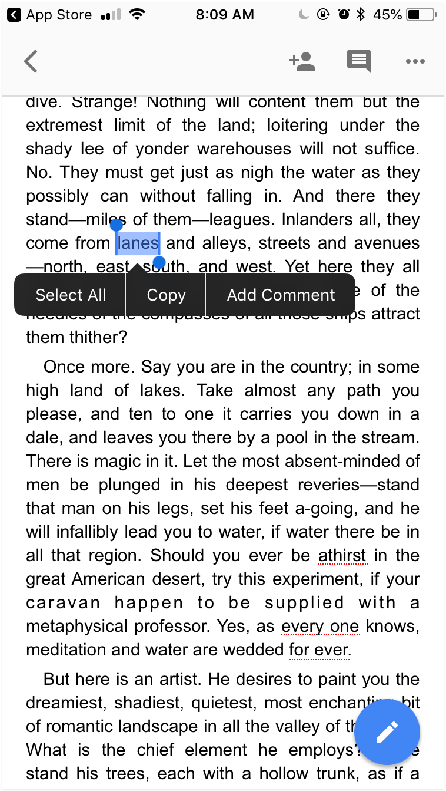

Collaboration App for Google Docs
Goal: Make composing text easier on Mobile.

About the Project
One of my favorite collaboration tools is Google Docs. I tried to use the Google Docs mobile app, but found it difficult to navigate larger documents. In this project, I explored a mobile app for editing and commenting on Google Docs. In the end, I arrived at some wireframes for a Mobile App that focuses on "chunking" text into easily-editable chunks. I brought this idea to an education technology hackathon, and my team ended up winning second place.
Usability Challenges on Mobile
Use-Case on Mobile
Google docs are generally consumed on desktop, but there are times when one needs to make edits on mobile. This could be while commuting to work on the train, and a request for feedback comes in from a coworker. This kind of work is focused generally on content changes. Changes related to styling are better-done on desktop. With this use-case in mind, this redesign is focused on addressing problems related to editing text.
Challenge: Scrolling Through Documents is Inefficient
Navigating a full-sized document google docs’ mobile app requires a lot of scrolling, and it’s easy to over-shoot a piece of text.
Challenge: Text is too Small to Select
With the small text-size, selecting a string of text is difficult. It's easy to select the wrong line of text, select too many characters, or not enough.

Ideation
After identifying the key pain points, I sketched different solutions on paper. To get a sense for how everything might fit into a mobile screen, I found it very useful to then represent these sketches on the computer using Framer and Sketch.

UI and Visual Design Refinement
After laying out the basic pages, I explored different UI patterns and visual styles for the different pages.
Hover Menu
I explored ways to represent the choices available to users when they select text. In one design I use the standard iOS multiple-choice modal, and in others I use a pop-up menu of choices. For the pop-up menu, I explored a range of icon sizes and colors. I ended up settling on purple icons on a white menu because of how the purple icons popped out more from the screen and connected more strongly to the highlighted text.
Commenting State
A commenting state needed a two main things: it needed to preserve some amount of context of the text being commented on, and it needed to allow the user to write multiple lines of text. With these requirements in mind, I tried different placements and visual styles for the comment box.
Placement of Comment State
In Google docs on desktop, the comment box pops up to the right of the text being commented. Unfortunately, on mobile there isn't this space available. In initial designs I placed the comment box directly above the text being commented, but this did not work well when the text box needed to expand. For example, if the box was above the text, it would need to expand upward and that could be disorienting. If the comment box exanded downward, it would cover the text. Then I tried putting the box under the text. Unfortunatly, that meant that the comment box would expand into the space behind the keyboard. For placement, I decided to place the text box on the top of the screen. This worked better because it allowed for more downward expansion than in other designs.
Colors in Comment State
To preserve context, the text that is being commented on appears in the comment box. I highlighted this text in a light purple to mirror the color of the selected state in the prior step. For background color, I used the same white as used in the hover menu. For the "Add Comment" button, I used the same purple that was used in icons. By using the purple consistently on action buttons and active state, it helps to reinforce expectations that purple denotes action. Overall, I wanted to use purple and white to reinforce the relationships between similar states and actions.
Prototyping
Menu of Paragraphs
Currently, when you open a Google Doc, you start at the beginning of the document with all paragraphs fully expanded. In this redesign, the paragraphs start out collapsed with enough information to identify each paragraph by its content and its location in the overall document.
Menu of Paragraphs
Currently, when you open a Google Doc, you start at the beginning of the document with all paragraphs fully expanded. In this redesign, the paragraphs start out collapsed with enough information to identify each paragraph by its content and its location in the overall document. Clicking on a paragraph then expands it.
Editing and Commenting
Once a paragraph is expanded, it can then be easily edited by clicking into the text or highlighting text. When text is highlighted, it can be styled and bold, italicized, or underlined. Users can also add comments to strings of text. Since the focus of this redesign is on mobile usage, the functionality is limited to simple text editing centered on the content, rather than sophisticated styling.
Clickable Prototype in Framer
Hackathon Win
After developing this idea on my own, I brought it to a hackathon where a team of developers and I fleshed out this idea. We ended up winning second place because the judges liked how this enables collaboration.
Sustainable Cooking App
Goal: Help people cook more sustainable dinners through better choices.
Out of the Classroom
In a sustainable design course, my team and I found that the majority of impact in a meal comes from the food, not the energy used to cook it. With the goal of changing what people cook, my team came up with the idea of an app that substitutes ingredients in recipes to make them more sustainable.
After the class ended, I turned the basic concepts into a vision prototype that could be tested. Here is my process for translating a rough idea into a prototype.
Remixipe Task-Flow Analysis
Before designing the app, I analyzed the process using a flow diagram. By creating this diagram, I saw how different actions connected in the overall user journey. This helped me to organize the UI.

Low-Fidelity Mockups
Following the task flow, I sketched mockups on paper and Balsamiq. Working at such low fidelity helped me explore ideas and cover all user actions. In this current iteration, I organized the app into four main steps: Input, Remix, Cook and Review.
Mockups
Input
People store and find recipes in a variety of ways, so the Input pages were designed to allow users to input recipes from these different sources.
Remix
People value different things in their meals, and the Remix page was designed to accommodate the values shared by Grant and Patricia. Users can choose between remixing their meal based on price, environmental impact, healthfulness, or preparation time.
Cook

The Cook Page allows users to do three things: Cook the recipe, save the recipe for later, or reject the current recipe and try a different remix.
Review
The review page allows users to give feedback on the flavor balance of the meal and rate it.
Validation of Demand
Now that I have mockups that capture the basic activities, the next step would be to test with users.
More specifically, I think it would be worth testing whether or not people are interested in trying "remixed" recipes. We could start by "remixing" common recipes on an instagram page and see if people cook the new recipes. After that, we could "remix" recipes that are user-submitted and gradually increase how much we simulate the experience of the app.